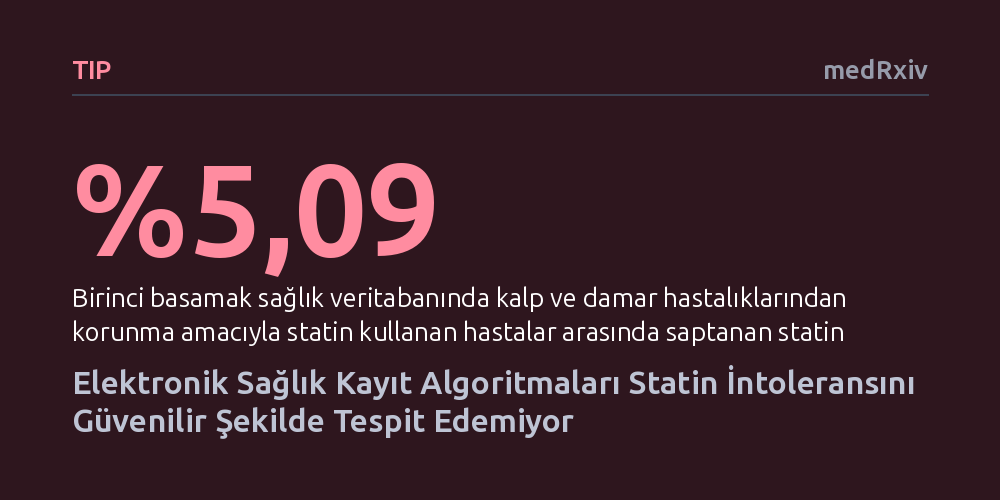

TIP · medRxiv · 2026-10-18
Araştırmacılar, elektronik sağlık kayıtlarını tarayan algoritmaların kalp hastalarında statin ilacı intoleransını ne kadar doğru tespit edebildiğini ve bu durumun yaygınlığını inceledi. Gerçek klinik verilerde statin intoleransı oranı yüzde 5,09 bulunurken, test edilen hiçbir algoritmanın klinik kullanım için tek başına yeterli güvenilirlikte olmadığı görüldü.
Rutin dijital sağlık verilerinin ve mevcut algoritmaların, ek hekim denetimi olmadan ilaç yan etkilerini ve intoleransı otomatik olarak tespit etmeye henüz hazır olmadığını gösterir.

Statin grubu ilaçlar, kandaki kolesterol seviyesini düşürerek kalp krizi ve inme gibi ölümcül damar tıkanıklıklarını önlemede tüm dünyada en sık reçete edilen temel ilaçların başında gelir. Ancak bu ilaçları kullanan bazı hastalarda kas ağrısı, kramp, güçsüzlük veya karaciğer enzimlerinde yükselme gibi yan etkiler görülür. İlacın tolere edilememesi ya da dozunun düşürülmesini gerektiren bu durum tıp literatüründe "statin intoleransı" olarak adlandırılır ve hastaların tedaviyi yarıda bırakmasının en önemli nedenlerinden biridir.
Günümüzde sağlık sistemleri hızla dijitalleşirken, muayene ve tedavi süreçlerinde kaydedilen elektronik sağlık kayıtları devasa bir bilgi kaynağı sunmaktadır. Araştırmacılar, bu kayıtları tarayarak statin intoleransı yaşayan hastaları yapay zeka ve kural tabanlı algoritmalarla otomatik olarak saptayıp saptayamayacaklarını araştırmaktadır. Eğer bu dijital yöntemler başarıyla çalışırsa, yan etki yaşayan hastalar erkenden fark edilerek tedavi planları zaman kaybetmeden güvenle güncellenebilir.
Araştırma ekibi, Avustralya'daki birinci basamak sağlık ağlarından elde edilen gerçek klinik kayıtları barındıran ePBRN veri kümesini mercek altına aldı. Çalışma dört temel aşamada yürütüldü: İlk olarak dünya genelinde elektronik sağlık kayıtlarından statin intoleransını tespit etmek için geliştirilmiş algoritmalar taranarak altı farklı yöntem belirlendi. Bu algoritmalar arasında ABD (Minnesota ve SIMs), Japonya (SIMs ve SAMT), Singapur (SIMs varyantları) ve İngiltere Ulusal Sağlık Sistemi (NHS) tarafından geliştirilen kurallar yer aldı.
İkinci ve üçüncü aşamalarda belirlenen bu altı algoritma ePBRN veri kümesine uygulandı ve tespitlerin doğruluğunu sınamak amacıyla uzmanlarca bir referans standart oluşturuldu. Son aşamada ise algoritmaların saptadığı sonuçlar bu referans standartla birebir kıyaslanarak doğruluk, duyarlılık, özgüllük ve kestirim değerleri gibi temel performans göstergeleri hesaplandı.
Çalışmada elde edilen ilk bulgu, incelenen veri tabanında statin intoleransı sıklığının yüzde 5,09 düzeyinde olmasıdır. Bu oran, Avustralya ve uluslararası alanda tahmin edilen yüzde 5 ila 15 aralığının alt sınırında yer almaktadır. Ancak asıl çarpıcı sonuç algoritmaların performansında ortaya çıktı: İncelenen altı algoritmanın hiçbiri tüm değerlendirme ölçütlerinde tutarlı ve dengeli bir başarı gösteremedi.
Örneğin Singapur SIMs-B algoritması yüzde 92,95 gibi çok yüksek bir duyarlılıkla gerçek vakaların çoğunu yakalamayı başardı ancak genel doğruluğu yüzde 57,05 seviyesinde kaldı. Buna karşılık Japonya SAMT algoritması yüzde 99,13 özgüllük ve yüzde 76,19 pozitif öngörü değeri sunarak yanlış teşhis koymama konusunda öne çıktı, fakat pek çok hastayı gözden kaçırdı. En dikkat çekici nokta ise algoritmalar ile referans standart arasındaki korelasyon katsayılarının -0,02 ile 0,05 arasında değişmesi oldu; bu da algoritmalar ile gerçek klinik durum arasındaki bağın neredeyse yok denecek kadar zayıf olduğunu belgeledi.
Elde edilen sonuçlar, rutin olarak toplanan elektronik sağlık verilerinin tek başına doğrudan bir teşhis aracı olarak kullanılmasında ciddi engeller bulunduğunu ortaya koymaktadır. Günlük klinik pratikte doktorların hastanın kas ağrısı gibi şikayetlerini her zaman standart tanı kodlarıyla kaydetmemesi, hastaların yan etkileri hekime her zaman tam bildirmemesi veya reçete değişikliklerinin gerekçelerinin kayıtlarda açıkça yer almaması algoritmaların başarısını zayıflatmaktadır.
Araştırmacılar, mevcut elektronik fenotipleme algoritmalarının klinik karar destek sistemlerinde doğrudan kullanılmadan önce daha fazla geliştirilmesi ve farklı hasta gruplarında doğrulanması gerektiği sonucuna varmaktadır. Hekimlerin yerini alacak aceleci bir otomasyon yerine, kayıt kalitesini artıran ve klinik muhakemeyi destekleyen yeni yaklaşımlara ihtiyaç duyulmaktadır.